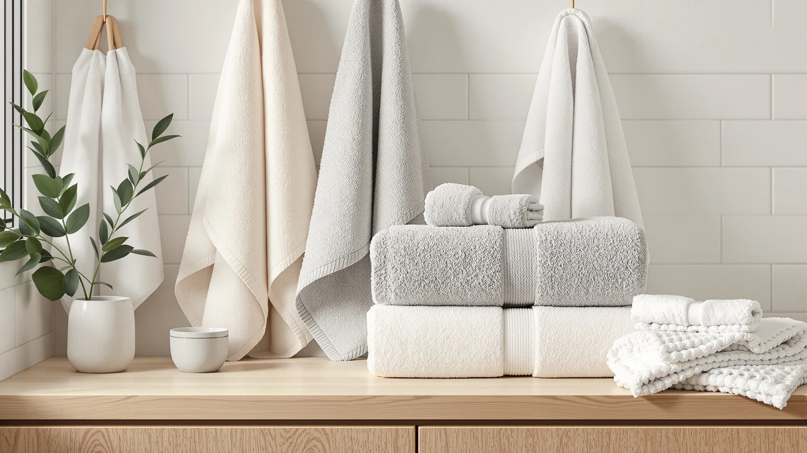

Best Bath Towels for College Dorm (2026)
Prices and picks verified as of August 2026. Independent, reader-supported reviews.


Quick Answer
After comparing price, material, and verified owner reviews across seven sets, the best bath towels for college dorm living are the White Classic Luxury White Bath Towel Set for most students. It's 100% cotton, comes in a full 8-piece set for about $5 a towel, and holds up to weekly shared-laundry washing better than the thinner budget options. Want faster drying or oversized coverage instead? Keep reading for the other six picks and how they compare.
Our pick: Luxury White Bath Towel Set, $39.99 Check Price on Amazon
Bottom line: our top pick is the Luxury White Bath Towel Set of 8 Pieces - 100% Turkish Cotton at $39.99. The best budget option is the Cotton Paradise 100% Cotton Turkish Towel Set at $35.99.
Things to Know Before You Buy
- Fabric weight matters more than thread count. Towels in the 400 to 600 GSM range absorb well without turning into a soggy brick that takes two days to dry on a dorm towel hook.
- Set size should match your laundry schedule. If you're doing laundry every 10 to 14 days, a 6 to 8 piece set gives you enough rotation to avoid a mid-week towel shortage.
- Ring spun and combed cotton dries faster than standard cotton. Reviewers consistently note it sheds less lint and dries noticeably quicker in shared laundry rooms with older dryers.
- Microfiber packs smaller but feels different. A microfiber set like NALIVO's folds into less shelf space, which matters in a dorm closet, though it doesn't have the plush feel of cotton.
- Check the actual bath towel count for the best bath towels for college dorm shopping, not just the piece count. Some "8-piece" sets include washcloths and hand towels, so confirm how many full-size bath towels are actually included.
The best bath towels for college dorm life have to solve a problem regular home bath towels were never built for: a shared bathroom down the hall, a laundry room with a two-week wait, and a closet with barely enough shelf space for one towel set, let alone two. A towel that soaks through in a single use or takes three days to dry on a cramped hook turns into a daily annoyance instead of something you never think about. We compared seven sets that show up most often in dorm shopping guides, from a budget eight-piece bundle to a quick-dry microfiber option, on fabric, dimensions, and how each one holds up under near-daily washing.
We built this list by comparing manufacturer specs, verified owner reviews, and current Amazon pricing across dozens of towel sets, then narrowed the field to sets that pack enough pieces for a semester without forcing a laundry run every three days. The Luxury White Bath Towel Set from White Classic came out ahead for most students: an 8-piece 100% cotton set at $39.99 that covers bath towels, hand towels, and washcloths in one order, without the bulk of a heavyweight towel that never fully dries on a dorm rod.
Not every dorm room has the same constraints, though. A student on a tight budget, or living in a suite splitting laundry with three roommates, needs a different pick than someone with a single room and more closet space. Below we break down which of these seven best bath towels for college dorm picks fits which situation, along with the trade-offs in thickness, dry time, and price per towel that verified owners consistently mention in their reviews.
Why You Should Trust Us
Best Bath Towels is run by writers who spend their time comparing fabric specs, pricing, and verified owner reviews so you don't have to dig through dozens of Amazon listings before move-in day. Ilane Tall, our home and bath editor, researched these seven sets for this best bath towels for college dorm guide by checking manufacturer fabric composition, current pricing, and patterns across verified customer reviews rather than relying on marketing copy. We do not run a fake testing lab, and no brand pays to be ranked higher here.
The picks below reflect what the fabric, size, and price actually deliver, not what a product listing claims.
How We Picked
We started by pulling every bath towel set in our product database tagged for dorm and small-bathroom use, then filtered for sets actually suited to college dorm life rather than a full bathroom remodel. A set had to include enough pieces to last between laundry days, use a fabric that dries within a reasonable window on a shared rack or dorm rod, and cost less than a textbook. We cut sets with inconsistent reviews around shedding, thin fabric, or misleading piece counts, and prioritized brands with a track record across multiple towel lines rather than a single listing.
From there we compared what remained on price per towel, since an 8-piece set at $39.99 and a 4-piece set at $35.99 solve different budget problems even though the totals look similar. The seven sets below are our answer for the best bath towels for college dorm shoppers once material, size, and price per towel are weighed against each other.
How We Compared
For each set, we compared manufacturer-listed fabric composition, dimensions, and piece count against current pricing to calculate a rough cost per towel. We also read through verified Amazon owner reviews for each product, looking for repeated mentions of shrinkage, thinning after repeated washing, or lint shedding, since those are the complaints that matter most for towels that see weekly institutional-style laundry.
Reviewers consistently note that 100% cotton towels hold their thickness longer than cotton-poly blends, which is why six of the seven best bath towels for college dorm picks here are pure cotton. Owners of the microfiber option report faster drying but a different initial feel, a trade-off worth weighing before you pick a set for your specific dorm laundry situation.
Our Picks

Luxury White Bath Towel Set
What we like
- Eight pieces cover bath towels, hand towels, and washcloths in a single dorm move-in order
- 100% cotton fabric that owners report keeps its thickness through a semester of shared-laundry washing
- Plain white design that won't clash with whatever your roommate brings
Flaws but not dealbreakers
- White shows shower-floor grime faster than the darker sets on this list
- Full cotton takes longer to dry on a cramped dorm towel hook than the microfiber option
| Material | 100% cotton |
| Size | 8 Pieces Towel Set |
For most incoming students, the Luxury White Bath Towel Set is the easiest single purchase to make before move-in day. The eight-piece breakdown, typically two bath towels, two hand towels, and four washcloths, means you can shower every day for close to two weeks before you're forced into the dorm laundry room, which matters when that room has three machines for an entire floor. Owners report the 100% cotton fabric holds its thickness through repeated institutional-style washing, instead of thinning out the way cheaper blends do by October.
The plain white color is the main trade-off. It looks clean out of the package, but reviewers note it shows shower-floor grime and mildew spots faster than a darker set, and dorm bathrooms are rarely spotless. Full cotton also takes a while to dry on a standard towel hook without much airflow, so plan to rotate towels rather than reach for the same damp one twice. Even with those caveats, this remains the set we'd point most students toward first.

American Soft Linen Luxury 6
What we like
- Feels noticeably plusher than the budget sets, according to repeat reviewers
- 6-piece set still covers bath towels, hand towels, and washcloths
- American Soft Linen has a consistent track record across several towel lines
Flaws but not dealbreakers
- Two fewer pieces than the 8-piece sets at the identical $39.99 price
- A handful of owners mention mild lint shedding during the first few washes
| Material | 100% cotton |
| Size | 6 Pc Towel Set |
American Soft Linen's Luxury 6-piece set trades piece count for feel. At the same $39.99 as our top pick, you get six pieces instead of eight, but reviewers consistently describe the fabric as thicker and softer, closer to what you'd find at a mid-range hotel than a standard dorm-store towel. That matters if the whole point of upgrading your dorm towels is making a shared, tiled bathroom feel a little less like a locker room.
Six pieces works fine for a single student washing roughly every ten days, though it's tighter if you're splitting a bathroom with a roommate who also wants a turn. A few owners mention some lint shedding in the first couple of washes, which is typical of plush cotton and settles down after that. If softness matters more to you than maximizing the piece count, this is the better of the two American Soft Linen options here.

Utopia Towels 8 Piece Luxury
What we like
- Cheapest 8-piece set in this comparison, at $30.39
- Matches the pricier Luxury White set piece for piece
- 100% cotton fabric that owners say survives regular dorm washing
Flaws but not dealbreakers
- Reviewers describe the fabric as thinner than the American Soft Linen sets
- Colored versions reportedly fade faster than white after repeated washes
| Material | 100% cotton |
| Size | 8 Pieces Towel Set |
If your dorm budget is already stretched thin by a meal plan and a stack of textbooks, the Utopia Towels 8 Piece Luxury set is worth a look first. At $30.39, it undercuts the Luxury White set by close to ten dollars while matching it piece for piece: two bath towels, two hand towels, and four washcloths. Owners report the 100% cotton fabric holds up reasonably well through a semester of regular washing, which is the bar that matters most for a dorm towel.
The lower price shows up in the fabric weight. Reviewers describe it as noticeably thinner than the American Soft Linen or Luxury White sets, so it doesn't have quite the same plush feel, though it still absorbs fine for daily showers. Colored versions reportedly fade faster than white after repeated washing, so if you're going with Utopia, white or a light neutral tends to hold up better over a full college year based on what verified buyers report.

American Soft Linen Luxury 4
What we like
- 27 by 54 inch towels, larger than the standard size in most sets here
- All four pieces are full bath towels, with nothing padding out the count
- Same plush American Soft Linen construction as the brand's 6-piece set
Flaws but not dealbreakers
- No hand towels or washcloths included
- Higher cost per towel than the 8-piece Utopia set at the same total price
| Material | 100% cotton |
| Size | 27x54" Bath Towel Set |
This is the same American Soft Linen quality as the brand's 6-piece set, repackaged for students who specifically want bigger bath towels rather than a mixed bundle. Each of the four towels measures 27 by 54 inches, larger than the standard dimensions on most of the other sets in this comparison, which is worth knowing if you're taller than average or just want more coverage after a shower down the hall.
The obvious catch is that you're only getting bath towels. There are no hand towels or washcloths in the box, so budget for those separately if your dorm sink area needs them. At $39.99 for four pieces, the cost per towel runs higher than the 8-piece Utopia set, though you're paying for larger dimensions and a plusher feel rather than raw piece count. This set fits best if hand towels are already covered and you just want to upgrade the bath towel itself.

NALIVO Extra Large Bath Towel
What we like
- Microfiber dries noticeably faster than cotton, useful with limited dryer access
- Extra-large sizing gives more coverage than the standard 27x54 cotton towels
- Packs down smaller than cotton, saving shelf space in a tight dorm closet
Flaws but not dealbreakers
- The most expensive set of the seven we compared, at $47.58
- Doesn't have the plush, absorbent feel that cotton fans expect
| Material | Microfiber |
| Size | 6Piece Towel Set |
Every other set on this list is cotton, which is what makes the NALIVO worth calling out. Microfiber wicks water rather than soaking it up the way cotton does, and the practical result for a dorm student is a towel that's dry again in a fraction of the time. That matters more than it sounds when your building has three dryers for sixty residents and your damp towel is fighting for rack space with everyone else's. NALIVO's extra-large sizing also gives more coverage per towel than the standard 27x54 cotton dimensions found elsewhere in this comparison.
That speed comes at a cost, in both price and feel. At $47.58, it's the priciest set here, and microfiber has a distinctly different texture than cotton, closer to a squeegee than the plush wrap you get from the American Soft Linen sets. Reviewers who prioritize quick drying and packability over plushness tend to rate it well, while students used to thick cotton towels sometimes need a few uses to adjust. It's a specific trade-off, not a universal upgrade over cotton.

Cotton Paradise 100% Cotton Turkish
What we like
- Denser Turkish weave that reviewers describe as more absorbent than standard cotton
- Priced between the budget Utopia set and the pricier American Soft Linen options
- 6-piece breakdown covers bath towels, hand towels, and washcloths
Flaws but not dealbreakers
- The denser weave takes longer to dry than the lighter cotton sets on this list
- Fewer bath towels included than the 8-piece sets if you're sharing with a roommate
| Material | 100% cotton |
| Size | 6 Piece Towel Set |
Turkish cotton has a reputation for being denser and more absorbent than standard American cotton, and Cotton Paradise's set is built around that reputation. At $35.99, it sits in the middle of the pack price-wise, cheaper than either American Soft Linen set but pricier than the Utopia budget option. Reviewers consistently describe the weave as thicker and more substantial than a typical dorm-store towel, in line with what Turkish cotton is generally known for in bath textiles.
The density that makes it absorbent also makes it heavier and slower to dry than a lighter weave, so if your dorm bathroom has poor airflow or you're relying on a shared drying rack, plan on extra dry time. Six pieces also gives you less rotation than the 8-piece sets if you're splitting a bathroom with a roommate. For a solo dorm room where you control the towel supply, though, it's a solid middle ground between the budget and plush options on this list.

Tens Towels Pack of 4
What we like
- 30 by 60 inch towels, among the largest in this comparison
- Thinner weave dries faster than the plush cotton sets despite being 100% cotton
- A simple 4-pack means you're not paying for washcloths you might not need
Flaws but not dealbreakers
- No hand towels or washcloths, the same limitation as the American Soft Linen 4-piece set
- Thinner fabric feels less plush than the Luxury White or American Soft Linen sets
| Material | 100% cotton |
| Size | 30 X 60 Inches |
Tens Towels takes a different approach than the rest of this list. Instead of a heavyweight, plush towel, the 30 by 60 inch pack uses a thinner cotton weave designed to dry faster while still giving you enough fabric to wrap around comfortably. At $35.99 for four towels, it's aimed at students who care more about size and dry time than piece count, since there are no hand towels or washcloths bundled in. Owners report the thinner weave cuts down on the wait between showers, a real consideration in a dorm room without much airflow.
The thinner fabric is also the trade-off. If you're used to a thick, plush towel, reviewers say this one feels more like a beach towel than a spa towel. It shares the same limitation as the American Soft Linen 4-piece set too: no washcloths or hand towels, so budget for those separately. For a student who showers in a hurry and wants a towel that's dry again before tomorrow, the swap of plushness for speed makes sense.
Quick Comparison
| Product | Material | Price | Rating | Best for | Get it |
|---|---|---|---|---|---|
| Luxury White Bath Towel Set | 100% cotton | $39.99 | 4 | Full dorm rotation | View on Amazon → |
| American Soft Linen Luxury 6 | 100% cotton | $39.99 | 4 | Plush feel, fewer pieces | View on Amazon → |
| Utopia Towels 8 Piece Luxury | 100% cotton | $30.39 | 4 | Best value, 8 pieces | View on Amazon → |
| American Soft Linen Luxury 4 | 100% cotton | $39.99 | 4 | Bath towels only, oversized | View on Amazon → |
| NALIVO Extra Large Bath Towel | Microfiber | $47.58 | 4 | Fastest drying, microfiber | View on Amazon → |
| Cotton Paradise 100% Cotton Turkish | 100% cotton | $35.99 | 4 | Turkish weave, mid-price | View on Amazon → |
| Tens Towels Pack of 4 | 100% cotton | $35.99 | 4 | Oversized, minimalist 4-pack | View on Amazon → |
How many bath towels do you need for a college dorm?
Most students do fine with six to eight towels total between bath towels, hand towels, and washcloths, which is enough to go two to three weeks between laundry trips.
Is cotton or microfiber better for a dorm bathroom?
Cotton absorbs more water per use and feels closer to a traditional towel, while microfiber like the NALIVO set dries faster and packs smaller, which helps in a cramped dorm closet.
The Competition
Beyond the seven sets above, we looked at several other towel options that didn't make the final list. A handful of bamboo-blend sets looked appealing for their eco-marketing, but sellers didn't disclose an actual cotton-to-bamboo-rayon ratio, which made a fair comparison impossible. We also passed on single-towel luxury listings priced above $25 per towel, since that per-towel cost doesn't fit most college budgets even when the fabric quality is strong.
Several license-branded dorm towel sets were excluded too, because their fabric specs matched the thinner cotton-poly blends we'd already ruled out during the picking stage, just with a higher price attached to the branding. After comparing price per towel, material, and owner feedback across everything we sourced, the White Classic Luxury White Bath Towel Set remains our answer for the best bath towels for college dorm shoppers who want the most complete rotation without giving up 100% cotton.
Frequently Asked Questions
How many bath towels do you need for a college dorm?
Most students do fine with six to eight towels total between bath towels, hand towels, and washcloths, which is enough to go two to three weeks between laundry trips. That matters when you're sharing a machine with an entire floor. An 8-piece set like the Luxury White or Utopia sets on this list covers that rotation in a single purchase.
Is cotton or microfiber better for a dorm bathroom?
Cotton absorbs more water per use and feels closer to a traditional towel, while microfiber like the NALIVO set dries faster and packs smaller, which helps in a cramped dorm closet. Owners report microfiber feels less plush for the first few washes, but the faster drying time can matter more than softness when your dorm bathroom has limited hanging space.
How often should you wash dorm bath towels?
A used towel should go into the wash after three to four uses to avoid bacteria and odor buildup, which is one reason an 8-piece set makes more sense than a 4-piece one for daily dorm use. Washing on warm and skipping fabric softener, which coats cotton fibers and reduces absorbency, helps any of these best bath towels for college dorm picks last through a full school year.